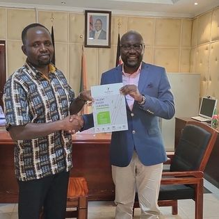
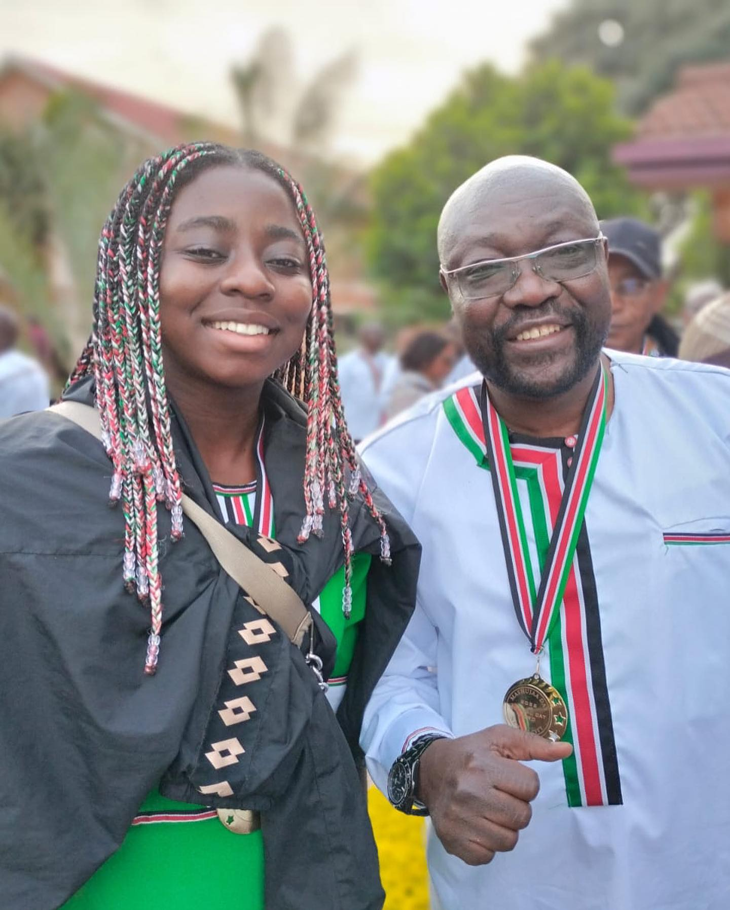
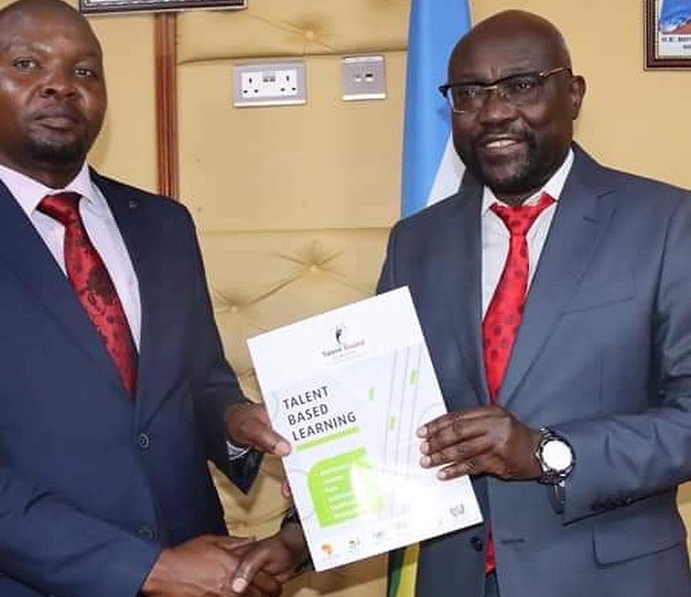
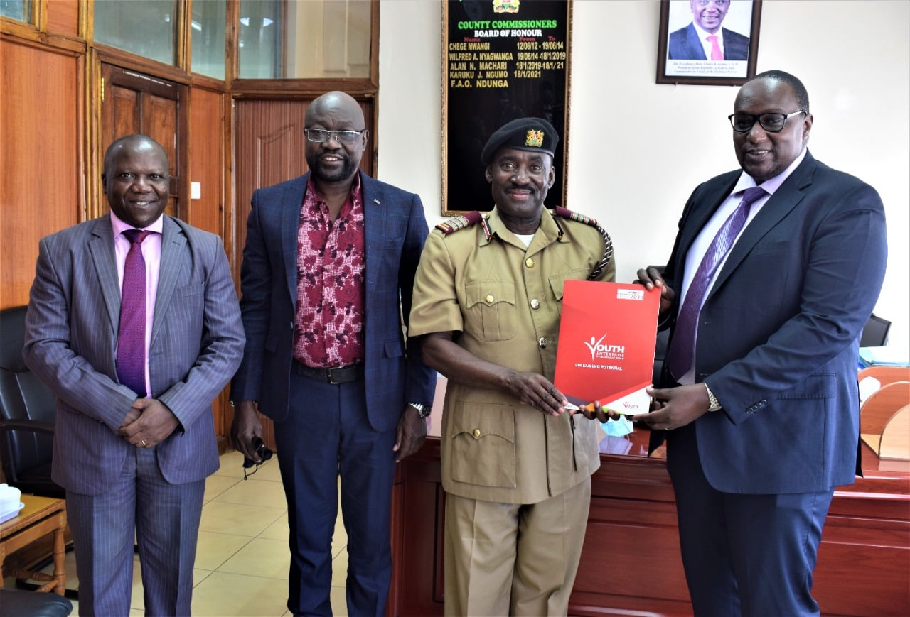

Here is a group of photos captured from various events such as launches, graduations, and talent shows.
Prof. Humphrey Oborah with Prof. Peter Anyang Nyongo(Governor of Kisumu County) and Mr. Frankline Obat Masira (CEO of Mama Grace Onyango Social Center)

Fri, 6th Jan, 2023-Prof. Humphrey Oborah met Trans Nzoia Governor, George Natembeya, in his office to set the stage for the setup of the first Anthropo- Biometric Talent Clinic in Kitale, Kenya.
Prof. Oborah during his press conference in South Sudan where he explained how Anthropo-Biometric Talent Machine works/ predicts careers.South Sudan became the new African country to receive donated Anthropo- Biometric Clinic worth USD 170,500.
Juba, Wed 14 Dec 2022- Prof Humphrey Oborah meets South Sudan Vice President, Hussein Abdelbagi Akol Agany ( and other senior government official) and later held a press conference where he explained how Anthropo-Biometric Talent Machine works/ predicts careers.

Brains behind TBC ( now CBC in Kenya) finally recognised, honoured and inducted into the Hall of Fame during Heroes (Mashujaa) Day in Kenya (Nairob, 22nd Oct 2022)

Prof Humphrey Oborah, on Tuesday 25th October 2022, was recieved by Meru County Deputy Governor - Mr. Isaac Mutuma- (on behalf of the Governor, HE Bishop Kawira Mwangaza). The professor informed the governor about the complete setup of the Kes 17 Million worth first Anthropo-Biometric Talent Clinic in Meru County at Kinoru Stadium.
Prof. Humphrey Oborah- Monrovia, Liberia visit: Meeting Senior Government and Parliamentary Representative Mr. Solomon George at The National Assembly HQ.His visit, on behalf of World Talent Federation, was to inspect the readiness of Liberia for the setup of the First Anthropo-Biometric Talent Clinic in that country.

On Thursday, February 10th, 2022, Prof Humphrey Oborah paid a courtesy call to Meru County, where he was received by Meru County Commissioner, F.A.O. Ndunga. This is during an official inspection of the county on behalf of the World Talent Federation in preparation for the first Talent Clinic in Meru County, Kenya. Prof. Oborah was accompanied by officials from the Youth Enterprise Development Fund, led by Chairman Dr. Victor Mwongera.
Prof Humphrey Oborah gives a captivating lecture and explanations of how the Anthropo-Biometric Machine works. He further set up /installed a new Talent Clinic in Eldoret Town, Kenya - 28th Jan 2022.


{kind=link}
{kind=link}
{kind=link}
{kind=link}
{kind=link}
{kind=link}
{kind=link}